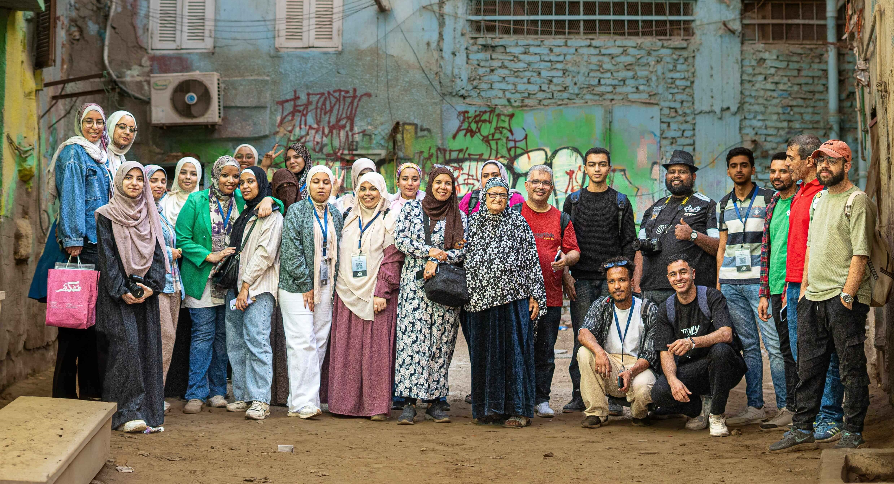
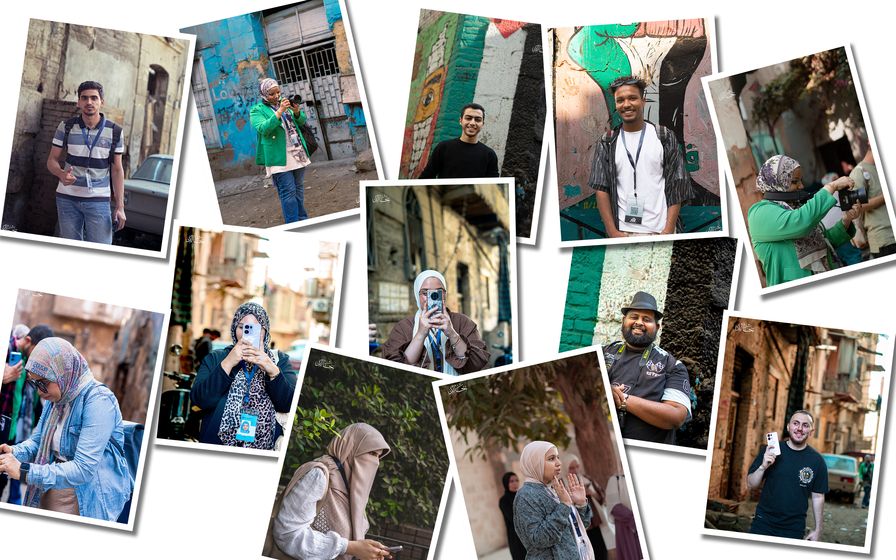
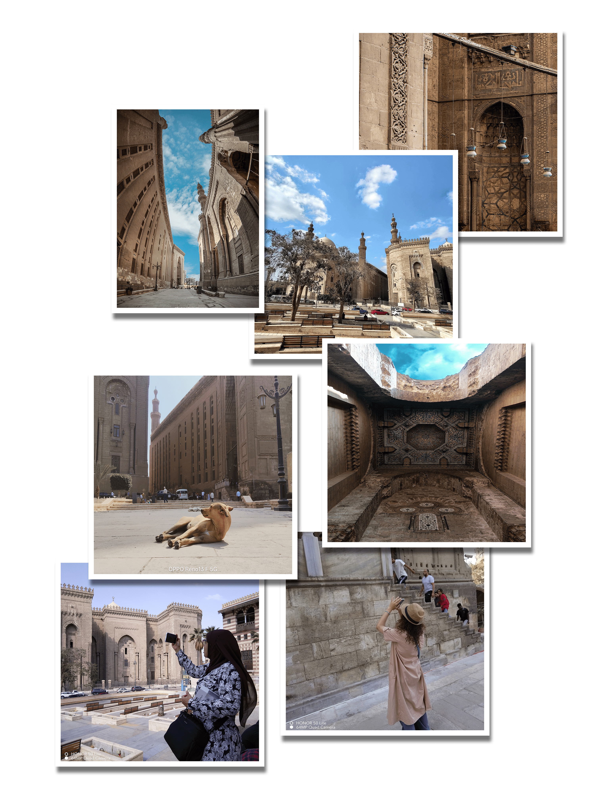
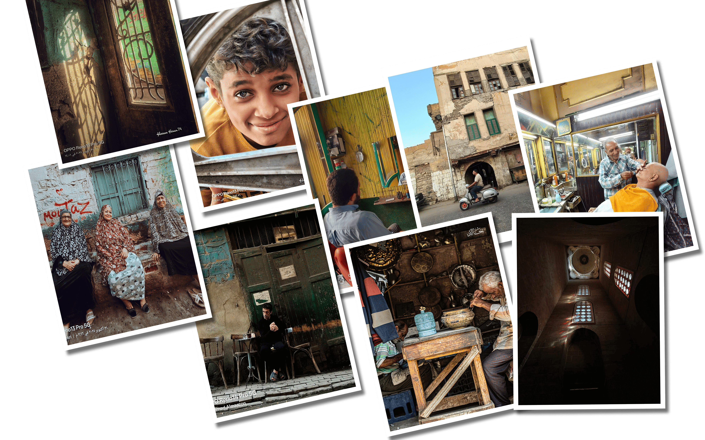
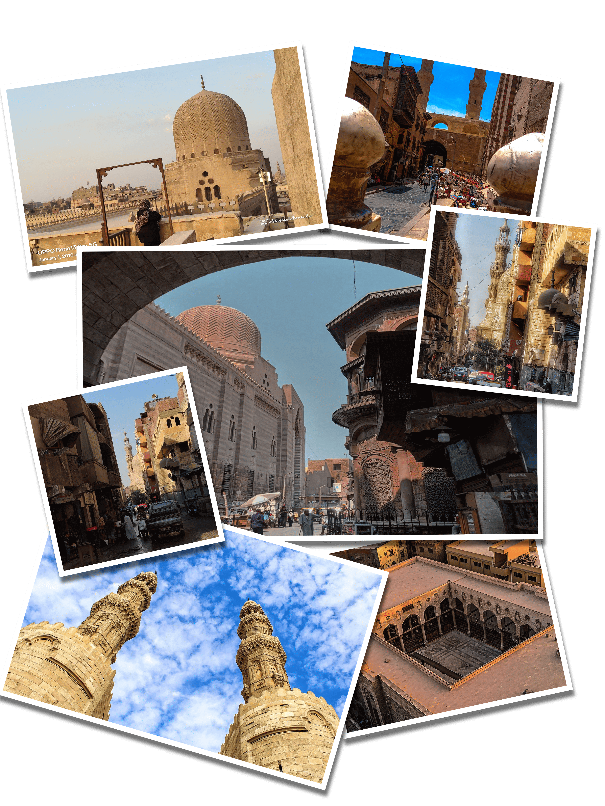
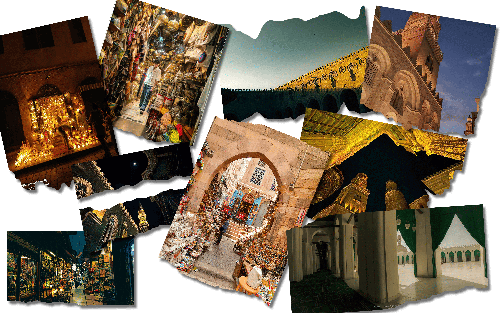

جولة القاهرة
بالتعاون مع شركة أوبو

توثيق للجولة
في جولتنا الممتعة في قلب القاهرة، كان معانا فريق مليان طاقة وحيوية وروح مرحة! سلمنا موبايلات أوبو والتقطنا صور حلوة لكل لحظة، من ضحكنا مع بعض لابتساماتنا الطبيعية ولحظات التركيز أثناء اكتشاف المعالم. كل صورة فيها قصة، كل ضحكة فيها ذكريات، وكل زاوية فيها جمال القاهرة الفريد. الجولات دي مش بس تصوير، ده كمان وقت للتعارف، مشاركة اللحظات، والتمتع بجمال المدينة بروح الفريق الواحد.

مسجد السلطان حسن
أول مكان زرناه، تحفة معمارية ضخمة تعكس فن العمارة الإسلامية بدأنا جولتنا عند المسجد والمدرسة العظيمة للسلطان حسن، ووقفنا مذهولين قدام ضخامة القباب والزخارف المملوكية الرائعة. صورنا بعض في الباحات الكبيرة والممرات المزخرفة، وفكرنا إزاي كل حجر بيحكي قصة تاريخية. لما ضوء الشمس دخل من النوافذ العالية، كل صورة فيها شعور بالهدوء والعظمة، وكأننا رجعنا لزمن المماليك. لفينا المكان كله، ضحكنا، اكتشفنا التفاصيل الصغيرة على الجدران، وصورنا كل زاوية ممكن تصور جمال المعمار بطريقة مختلفة.

الدرب الأحمر
بعدها رحنا الدرب الأحمر، الحي اللي مليان حياة وألوان وروح الزمن الجميل. اتجولنا في الأزقة الضيقة، تصفحنا المحلات الصغيرة اللي بتبيع كل حاجة من البهارات للمشغولات اليدوية، وكل زاوية فيها ريحة زمان. صورنا الحارات القديمة، ضحكنا مع بعض، والتقطنا لقطات عفوية تعكس حركة الحياة اليومية. الدرب الأحمر مكان يخليك تحس إنك داخل فيلم عن القاهرة القديمة، مليان مفاجآت لكل عين بتدور على جمال التفاصيل.

باب زويلة
بعدها وصلنا باب زويلة التاريخي، ووقفنا قدام العراقة والجمال. صورنا الباب من كل الزوايا، من بعيد ومن قريب، ولفينا الشارع اللي حواليه، واكتشفنا كل تفاصيل النقوش الحجرية والأقواس الكبيرة. حسينا كأننا رجعنا بالزمن للقرون اللي فاتت، وكل صورة فيها روح التاريخ والمدينة القديمة. كان المشي حوالين الباب واللقطات اللي صورناها تجربة مدهشة لكل محبي التاريخ والتصوير.

شارع المعز
أخيرًا، قضينا وقت رائع في شارع المعز، المكان اللي بيجمع بين سحر الماضي وحيوية المدينة. لفينا الأزقة، دخلنا الأسواق، وتصورنا قدام المباني العتيقة والمساجد الجميلة. كل زاوية فيها منظر مختلف، كل ضحكة بين الناس والألوان فيها روح القاهرة القديمة. صورنا كل التفاصيل، من القباب المزخرفة للمداخل الحجرية، وكل لقطة فيها شعور بالزمن الجميل. الجولة في المعز كانت ختام مثالي ليوم مليان اكتشافات، ضحك، وتصوير لا يُنسى.
خريطة الأماكن التي تمت زيارتها
هنا توضيح لجميع الأماكن التي تم زيارتها في الجولة مع موقعها على الخريطة.